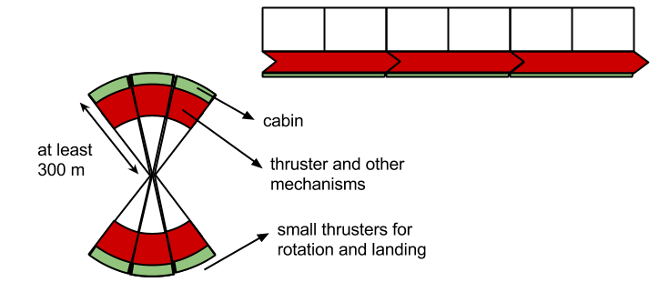

everlasting intelligence
https://github.com/damoonsaghian/everlasting-intelligence
1, everlasting intelligence
maybe in the future there would be some way to extend human lifetime. or maybe strong artificial intelligence and mind uploading will be possible, in the far far future.
but personally i think our natural lifetime is more or less enough for experiencing life as an individual. actually we are not our memories, so why bother making them immortal.
considering the horrible things that some mortals have done in human history, maybe mortality of human beings isn't a bad thing.
important thoughts can always be recorded, and every generation can study it and improve it. we may loose our body and personal memories, but our more important thoughts can live for a long time, as a collective entity called human knowledge.
2, language
semantic primes, alphabet of human thought, philosophical language
Toki Pona, Ro artificial language, Ithkuil, Aui constructed language
writing system
phones are the exact atomic speech sounds, phonemes are a set of similar phones.
phonetic writing systems needs a lot of letters and makes the writing needlessly cumbersome. phonemic systems are enough to make a consistent correspondence between what we say, and what we write.
phonemic writing system for English, benefits those that are learning it. but for those that have learned it already, the challenge is to get used to the new shape of words, because in fact we read by seeing the shape of words, not by reading single letters.
f, v, s, z, x (pressure), xx (pleasure), tt (thought), dd (that), t, d, b, p, c (charge), j, k, g (get)
n, m, l, r, w, y (yellow), h
u (fun), a (bad), e, i, o, q (food)
, use capital letters for special words (words which are not generic).
, apostrophe is used for abbreviations and for connecting words.
, in addition there are numbers and some special symbols.
, tables, diagrams and drawings can be used to express some ideas in a concise and clear way.
try to read the following text:
kempiqterz kan help pipel tq izili akses and imprqv hiqmen nulej and az e rizult dq ttingz tq imprqv dde kquleti uv hiqmen luyf.
ddis iz wut ejekeyxen iz ol ebawt, or at list it must bi.
cildren kan lern simpel skilz, yqzfel in evridey luyf. adlesents kan lern mor advansd skilz, yqsfel for kenstrukting and diveleping advansd teknulejiz.
3, biological needs
at least for centuries to come, the existence of intelligence on earth will be dependent on the survival of humans.
our basic biological needs are:
, air i'e oxygen plus nitrogen and/or helium to adjust its density, with suitable temperature and pressure
, water i'e h2'o plus some minerals to adjust the p'h
, nutrients:
1, amino acids: l'lysine h'cl (3.58 g), sodium l'aspartate (6.40 g), l'leucine (3.83 g), l'threonine (2.42 g), l'isoleucine (2.42 g), l'proline (10.33 g), l'valine (2.67 g), glycine (1.67 g), l'phenylalanine (1.75 g), l'serine (5.33 g), l'arginine h'cl (2.58 g), l'tyrosine ethyl ester h'cl (6.83 g), l'histidine h'cl h2'o (1.58 g), l'tryptophan (0.75 g), l'methionine (1.75 g), l'glutamine (9.07 g), l'alanine (2.58 g), l'cysteine ethyl ester h'cl (0.92 g)
2, water soluble vitamins: thiamine h'cl (1.00 m'g), d'biotin (0.83 m'g), riboflavin (1.50 m'g), folic acid (1.67 m'g), pyridoxine h'cl (1.67 m'g), ascorbic acid (62.50 m'g), niacinamide (10.00 m'g), cyanocobalamin (1.67 m'g), inositol (0.83 m'g), p'aminobenzoic acid (416.56 m'g), d'calcium pantothenate (8.33 m'g), choline bitartrate (231.25 m'g)
3, salts: potassium iodide (0.25 m'g), potassium hydroxide (0.83 g), manganous acetate (18.30 m'g), magnesium oxide (0.38 g), zinc benzoate (2.82 m'g), sodium chloride (4.77 g), cupric acetate (2.50 m'g), ferrous gluconate (0.83 g), sodium glycerophosphate (1.67 m'g), calcium chloride 2 h2'o (2.44 g), ammonium molybdate 4 h2'o (5.23 g), sodium benzoate (1.00 g)
4, carbohydrates: glucose (555.0 g), glucono d'lactone (17.2 g)
5, fats and fat soluble vitamins: ethyl linoleate (2.0 g) a'tocopherol acetate (57.29 m'g), vitamin'a (3.64 m'g) menadione (4.58 m'g) vitamin'd (0.057 m'g)
6, maybe other things like fiber which are not really nutrient, but are good for digestive system
naturally the environment we evolved in, supplies our basic needs, but it is generally unstable, slow and insufficient (considering the current population and standards of life). thus we have to build machines which can do it faster and in larger amounts.
4, future cities
autonomous car
platoon automobile
leadership
society is made of groups with different specialties, each group can elect their leaders.
election can in fact be a simple, cheap, dynamic, and completely reliable process.
the only thing we need to completely trust the result of an election, is to release the final result in a table. every one can see if his vote is entered correctly or not. (votes are submitted based on anonymous codes which only its owner knows of its correspondence with his name)
since the total number of voters is known, the result is completely reliable. there is no place for cheating in this method.
this method is so simple and cheap that can be easily done in short periods (every month or every 3 months). actually people can vote any time they want, and the result table will be updated continuously. but the election will be made in discrete periods.
now compare this simple method with what is called democracy nowadays. actually this is a clear example that shows us how the ones in power play with people and treat them like fools.
beyond earth
to spread beyond earth we need a gigantic craft powered by nuclear energy, equipped with ion thrusters, containing enough amounts of necessary elements for air, water and food, and machines to recycle them.
also there must be machines for mining elements from planets, including enough propeller matter to leave planets and navigate through space.
the craft can use the relative movement and gravity of planets to accelerate and decelerate. (gravitational slingshot, gravity assist)

each segment is equipped with its own thruster. during taking off most of its volume is used for propeller matter.
in the space this segments connect together as shown in the figure, and by rotational motion they provide artificial gravity.
each segment must have a mass equal to the segment at the opposite side (i think fluids can be used to compensate small mass inequalities). so we would have two separated regions, unless of course they form a complete cylinder.
artificial intelligence eliminates a lot of complexities required for sustaining biological intelligence.
5, everlasting energy
it seems that there is only one source of energy which is inexhaustible, the nucleus of abundant elements.
Sun
we live because of the Sun, and because we are far enough from it. but this also means that the energy is dispersed on earth and to harness it we need a lot of space.
concentrated solar power is a good method to do it.
though instead of heating water in tubes by sunlight we can use the equivalent natural systems:
1, water cycle which its use is almost saturated
2, high altitude wind, like Magenn air rotor system
energy storage
we can store energy in the electron arrangement of special materials. they are called batteries or fuels, if the released energy is electricity or heat, respectively.
flow battery, regenerative fuel cell
super'capacitor
fossil fuels are how nature does this. they have very good energy densities, but burning them pollutes air, and their natural resources will eventually expire.
biofuel is a ridiculous, and at the same time a sad, lie. it leads to more hunger, and it is the most inefficient way to harness the energy of the sun.
nuclear energy
imitating what happens in the sun, i'e ramming two mutually repelling nuclei together (a process called fusion), is extremely hard to confine in systems smaller than stars.
currently the most common way to harness nuclear energy is by splitting a heavy nucleus apart, a process called fission, which in addition to not being an abundant energy source, is in general a very dirty process, producing a lot of highly radioactive wastes. though maybe new generation reactors can solve these problems (partially at least).
it would be great if we could harness nuclear energy directly and safely, because energy is the second major problem of humankind. (the first is our ego)
WidomLarsen theory
it seems that clean and abundant nuclear energy might be possible, according to WidomLarsen theory.
we know that offering low momentum neutrons to nuclei of atoms initiates nuclear reactions (generally neutron capture and beta decay) which release energy.
but how can we generate these neutrons without expending more energy than the process yields. it seems that there maybe a way, thanks to a theory by Allan Widom and Lewis Larsen.
producing neutrons requires a threshold minimum local electric field of at least 2e11 volt/meter. this is a typical nuclear'strength e'field seen by inner electrons in un'ionized atomic nuclei. for example the electric field strength at Bohr radius (about 0.5 angstrom away from an isolated proton) is roughly 5e11 volt/meter.
some have expressed concerns that this theoretical electric field strength estimate may be unphysical, in it being hard to exceed 2e11 v/m in the real world. such fears are groundless, local electrical fields > 1e11 v/m are readily created on small nano'crevices in materials.
BornOppenheimer is well known to break down on metal surfaces. however the magnitude of BornOppenheimer breakdown may vary widely from one chemical system to another.
breakdown of BornOppenheimer approximation in the local region in the contiguous patches formed on fully loaded metalic hydride surfaces, enables collective oscillations of the protons to couple loosely to the collective oscillations of nearby surface plasmon polariton (s'p'p) electrons, commonly found on surfaces of metals.
see "CA Chatzidimitriou Dreismann, attosecond quantum entanglement in neutron Compton scattering from water in the k'ev range".
see "JD Jost et'al, entangled mechanical oscillators, nature 459 2009", in which mechanical vibration of two ion pairs separated by a few hundred micrometers, is entangled in a quantum way.
coupling between s'p'p electrons and the patches of protons increases the local electric field to values more than 10e11 volt/meter, roughly the same magnitude as electric fields seen by inner electrons in atomic nuclei.
intense local field raises effective mass of s'p'p electrons, so that they can react spontaneously with nearby protons to create neutrons.
neutrons created collectively have huge quantum mechanical wavelengths (2 nano'meters to microns) and are almost always absorbed locally by nearby nuclei within picoseconds. (they generally do not have enough time to thermalize which requires a few tenths of a milli'second)
heavy'mass s'p'p electrons in condensed matter systems have the unique ability to directly absorb a gamma photon and re'radiate it as a collection of much lower energy infrared and soft x'ray photons. thus providing a form of built'in gamma shielding that preclude external emission of hard radiation in the form of mega e'v gamma rays.
while these many'body collective processes operate very rapidly, and nanoscale coherence can only persist for time spans of 1e-15 to 1e-18 sec, nuclear processes such as weak interaction u'l'm neutron production and neutron capture operate on even faster time scales, about 1e-19 to 1e-22 second.
see these papers by A Widom and L Larsen:
experimental evidence for WidomLarsen theory
since 1989, certain researchers in l'e'n'r have documented genuine anomalies that occur in various types experiments, all involving heavily loaded metallic hydrides:
1, production of a broad array of different stable isotopic transmutation products
2, different types of nuclear effects triggered by electrical current, laser, r'f, and pressure
3, calorimetrically measured excess heat effects in wide range of values from just milli'watts to tens of watts in some cases
4, production of helium isotopes, rarely detect tritium
5, production of modest fluxes of mega e'v alpha particles and protons, as well as some minuscule fluxes of low energy x and gamma ray photons (no fluxes of hard mega e'v gammas)
simple two'parameter optical model of u'l'm neutron absorption based on WidomLarsen theory of l'e'n'r, predicts 5 peaks for product isotopic abundance, which matches very well with experimental results. i think this is the best experimental evidence for WidomLarsen theory.
mass spectroscopy probably the best analytical technique for diagnosing presence of l'e'n'r. by the early to mid 1990s maverick l'e'n'r researchers, located at a smattering of major universities and national laboratories in Japan, Russia, Italy, and United States, were already doing analyses of experimental l'e'n'r devices, using various types of mass spectroscopy and (mainly at conferences) reporting the appearance of many new elements not initially present at the beginning of experiments, and'or substantial isotopic shifts in stable isotopes of elements initially present that could not reasonably be explained by contamination, and/or the action of prosaic chemical isotopic fractionation processes.
some apostate l'e'n'r researchers using s'i'm's to assay isotopes post'experiment, were even able to spatially correlate elemental or isotopic anomalies, with distinctive morphological features observed on post'experiment metallic device surfaces.
unusual structures found at such locations often consisted of micron'scale craters and other odd morphologies indicative of locally explosive flash melting or boiling events.
see "George Miley, distinctive 5 peak ni/h2'o transmutation product mass spectrum".
why is the Sun's corona so much hotter than the sun's surface, this coronal heating problem is still an unresolved problem of physics. can it be because of low energy nuclear reactions discussed above.
this theory may be able to explain the strange nuclear reactions observed in fracturing piezoelectric rocks, exploding wires and lightnings.